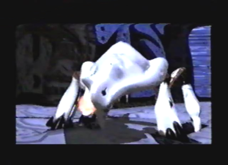
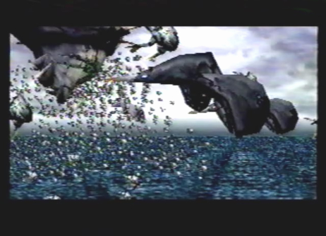
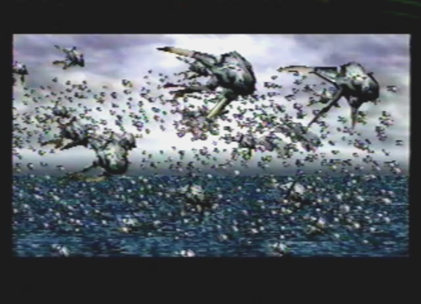

Tower Pure Type  |
| Strategy As I made my way to the Tower's control area, I ran straight into a trap laid out by the Empire. The events that soon unfolded were truly horrible. Craymen was gunned down after attempting to kill the Emperor, and Azel was forced to activate the Tower. Worst of all, a giant monster appeared and began to slaughter everyone. The Emperor was no exception, and sadly, Craymen fell victim to the horrible atrocity, as well. The adrenaline was pumping throughout my body, as I began to hastily shoot my gun at the monster. My laser fire was just deflected off of the monsters hard body armor. I kept at it for what seemed like an eternity, and finally, the monster was subdued. An unconscious Azel and I, made our escape out of the Tower, thanks to my dragon. |
Tower Swarm  |
 |
| Strategy Once outside the Tower, it was evident that it was now fully active. Swarms of monsters began to awaken, and left the confines of the Tower in great swarms. The swarm took down the Imperial fleet stationed outside the Tower, and completely infested the Flagship Grig Orig. There was nothing more I could do, so I made my retreat to safety. |